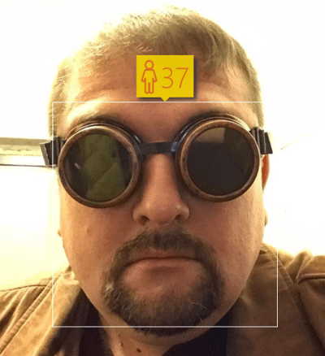
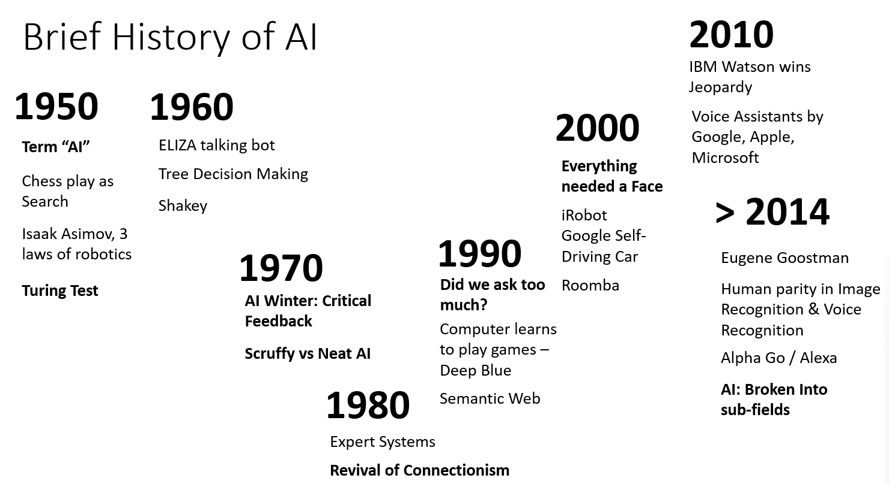

Introduction to AI

Sketchnote by Tomomi Imura
Pre-lecture quiz
Artificial Intelligence is an exciting scientific discipline that studies how we can make computers exhibit intelligent behavior, e.g. do those things that human beings are good at doing.
Originally, computers were invented by Charles Babbage to operate on numbers following a well-defined procedure - an algorithm. Modern computers, even though significantly more advanced than the original model proposed in the 19th century, still follow the same idea of controlled computations. Thus it is possible to program a computer to do something if we know the exact sequence of steps that we need to do in order to achieve the goal.

Photo by Vickie Soshnikova
✅ Defining the age of a person from his or her photograph is a task that cannot be explicitly programmed, because we do not know how we come up with a number inside our head when we do it.
There are some tasks, however, that we do not explicitly know how to solve. Consider determining the age of a person from his/her photograph. We somehow learn to do it, because we have seen many examples of people of different age, but we cannot explicitly explain how we do it, nor can we program the computer to do it. This is exactly the kind of task that are of interest to Artificial Intelligence (AI for short).
✅ Think of some tasks that you could offload to a computer that would benefit from AI. Consider the fields of finance, medicine, and the arts - how are these fields benefiting today from AI?
Weak AI vs. Strong AI
| Weak AI | Strong AI |
|---|---|
| Weak AI refers to AI systems that are designed and trained for a specific task or a narrow set of tasks. | Strong AI, or Artificial General Intelligence (AGI), refers to AI systems with human-level intelligence and understanding. |
| These AI systems are not generally intelligent; they excel in performing a predefined task but lack true understanding or consciousness. | These AI systems have the ability to perform any intellectual task that a human being can do, adapt to different domains, and possess a form of consciousness or self-awareness. |
| Examples of weak AI include virtual assistants like Siri or Alexa, recommendation algorithms used by streaming services, and chatbots that are designed for specific customer service tasks. | Achieving Strong AI is a long-term goal of AI research and would require the development of AI systems that can reason, learn, understand, and adapt across a wide range of tasks and contexts. |
| Weak AI is highly specialized and does not possess human-like cognitive abilities or general problem-solving capabilities beyond its narrow domain. | Strong AI is currently a theoretical concept, and no AI system has reached this level of general intelligence |
for more infomation refer Artificial General Intelligence (AGI).
The Definition of Intelligence and the Turing Test
One of the problems when dealing with the term Intelligence is that there is no clear definition of this term. One can argue that intelligence is connected to abstract thinking, or to self-awareness, but we cannot properly define it.
Photo by Amber Kipp from Unsplash
To see the ambiguity of a term intelligence, try answering a question: "Is a cat intelligent?". Different people tend to give different answers to this question, as there is no universally accepted test to prove the assertion is true or not. And if you think there is - try running your cat through an IQ test...
✅ Think for a minute about how you define intelligence. Is a crow who can solve a maze and get at some food intelligent? Is a child intelligent?
When speaking about AGI we need to have some way to tell if we have created a truly intelligent system. Alan Turing proposed a way called a Turing Test, which also acts like a definition of intelligence. The test compares a given system to something inherently intelligent - a real human being, and because any automatic comparison can be bypassed by a computer program, we use a human interrogator. So, if a human being is unable to distinguish between a real person and a computer system in text-based dialogue - the system is considered intelligent.
A chat-bot called Eugene Goostman, developed in St.Petersburg, came close to passing the Turing test in 2014 by using a clever personality trick. It announced up front that it was a 13-year old Ukrainian boy, which would explain the lack of knowledge and some discrepancies in the text. The bot convinced 30% of the judges that it was human after a 5 minute dialogue, a metric that Turing believed a machine would be able to pass by 2000. However, one should understand that this does not indicate that we have created an intelligent system, or that a computer system has fooled the human interrogator - the system didn't fool the humans, but rather the bot creators did!
✅ Have you ever been fooled by a chat bot into thinking that you are speaking to a human? How did it convince you?
Different Approaches to AI
If we want a computer to behave like a human, we need somehow to model inside a computer our way of thinking. Consequently, we need to try to understand what makes a human being intelligent.
To be able to program intelligence into a machine, we need to understand how our own processes of making decisions work. If you do a little self-introspection, you will realize that there are some processes that happen subconsciously – eg. we can distinguish a cat from a dog without thinking about it - while some others involve reasoning.
There are two possible approaches to this problem:
| Top-down Approach (Symbolic Reasoning) | Bottom-up Approach (Neural Networks) |
|---|---|
| A top-down approach models the way a person reasons to solve a problem. It involves extracting knowledge from a human being, and representing it in a computer-readable form. We also need to develop a way to model reasoning inside a computer. | A bottom-up approach models the structure of a human brain, consisting of a huge number of simple units called neurons. Each neuron acts like a weighted average of its inputs, and we can train a network of neurons to solve useful problems by providing training data. |
There are also some other possible approaches to intelligence:
-
An Emergent, Synergetic or multi-agent approach are based on the fact that complex intelligent behaviour can be obtained by an interaction of a large number of simple agents. According to evolutionary cybernetics, intelligence can emerge from more simple, reactive behaviour in the process of metasystem transition.
-
An Evolutionary approach, or genetic algorithm is an optimization process based on the principles of evolution.
We will consider those approaches later in the course, but right now we will focus on two main directions: top-down and bottom-up.
The Top-Down Approach
In a top-down approach, we try to model our reasoning. Because we can follow our thoughts when we reason, we can try to formalize this process and program it inside the computer. This is called symbolic reasoning.
People tend to have some rules in their head that guide their decision making processes. For example, when a doctor is diagnosing a patient, he or she may realize that a person has a fever, and thus there might be some inflammation going on inside the body. By applying a large set of rules to a specific problem a doctor may be able to come up with the final diagnosis.
This approach relies heavily on knowledge representation and reasoning. Extracting knowledge from a human expert might be the most difficult part, because a doctor in many cases would not know exactly why he or she is coming up with a particular diagnosis. Sometimes the solution just comes up in his or her head without explicit thinking. Some tasks, such as determining the age of a person from a photograph, cannot be at all reduced to manipulating knowledge.
Bottom-Up Approach
Alternately, we can try to model the simplest elements inside our brain – a neuron. We can construct a so-called artificial neural network inside a computer, and then try to teach it to solve problems by giving it examples. This process is similar to how a newborn child learns about his or her surroundings by making observations.
✅ Do a little research on how babies learn. What are the basic elements of a baby's brain?
What about ML? Part of Artificial Intelligence that is based on computer learning to solve a problem based on some data is called Machine Learning. We will not consider classical machine learning in this course - we refer you to a separate Machine Learning for Beginners curriculum.

A Brief History of AI
Artificial Intelligence was started as a field in the middle of the twentieth century. Initially, symbolic reasoning was a prevalent approach, and it led to a number of important successes, such as expert systems – computer programs that were able to act as an expert in some limited problem domains. However, it soon became clear that such approach does not scale well. Extracting the knowledge from an expert, representing it in a computer, and keeping that knowledgebase accurate turns out to be a very complex task, and too expensive to be practical in many cases. This led to so-called AI Winter in the 1970s.

Image by Dmitry Soshnikov
As time passed, computing resources became cheaper, and more data has become available, so neural network approaches started demonstrating great performance in competing with human beings in many areas, such as computer vision or speech understanding. In the last decade, the term Artificial Intelligence has been mostly used as a synonym for Neural Networks, because most of the AI successes that we hear about are based on them.
We can observe how the approaches changed, for example, in creating a chess playing computer program:
- Early chess programs were based on search – a program explicitly tried to estimate possible moves of an opponent for a given number of next moves, and selected an optimal move based on the optimal position that can be achieved in a few moves. It led to the development of the so-called alpha-beta pruning search algorithm.
- Search strategies work well toward the end of the game, where the search space is limited by a small number of possible moves. However, at the beginning of the game, the search space is huge, and the algorithm can be improved by learning from existing matches between human players. Subsequent experiments employed so-called case-based reasoning, where the program looked for cases in the knowledge base very similar to the current position in the game.
- Modern programs that win over human players are based on neural networks and reinforcement learning, where the programs learn to play solely by playing a long time against themselves and learning from their own mistakes – much like human beings do when learning to play chess. However, a computer program can play many more games in much less time, and thus can learn much faster.
✅ Do a little research on other games that have been played by AI.
Similarly, we can see how the approach towards creating “talking programs” (that might pass the Turing test) changed:
- Early programs of this kind such as Eliza, were based on very simple grammatical rules and the re-formulation of the input sentence into a question.
- Modern assistants, such as Cortana, Siri or Google Assistant are all hybrid systems that use Neural networks to convert speech into text and recognize our intent, and then employ some reasoning or explicit algorithms to perform required actions.
- In the future, we may expect a complete neural-based model to handle dialogue by itself. The recent GPT and Turing-NLG family of neural networks show great success in this.

Image by Dmitry Soshnikov, photo by Marina Abrosimova, Unsplash
Recent AI Research
The huge recent growth in neural network research started around 2010, when large public datasets started to become available. A huge collection of images called ImageNet, which contains around 14 million annotated images, gave birth to the ImageNet Large Scale Visual Recognition Challenge.

Image by Dmitry Soshnikov
In 2012, Convolutional Neural Networks were first used in image classification, which led to a significant drop in classification errors (from almost 30% to 16.4%). In 2015, ResNet architecture from Microsoft Research achieved human-level accuracy.
Since then, Neural Networks demonstrated very successful behaviour in many tasks:
| Year | Human Parity achieved |
|---|---|
| 2015 | Image Classification |
| 2016 | Conversational Speech Recognition |
| 2018 | Automatic Machine Translation (Chinese-to-English) |
| 2020 | Image Captioning |
Over the past few years we have witnessed huge successes with large language models, such as BERT and GPT-3. This happened mostly due to the fact that there is a lot of general text data available that allows us to train models to capture the structure and meaning of texts, pre-train them on general text collections, and then specialize those models for more specific tasks. We will learn more about Natural Language Processing later in this course.
🚀 Challenge
Do a tour of the internet to determine where, in your opinion, AI is most effectively used. Is it in a Mapping app, or some speech-to-text service or a video game? Research how the system was built.
Post-lecture quiz
Review & Self Study
Review the history of AI and ML by reading through this lesson. Take an element from the sketchnote at the top of that lesson or this one and research it in more depth to understand the cultural context informing its evolution.
Assignment: Game Jam